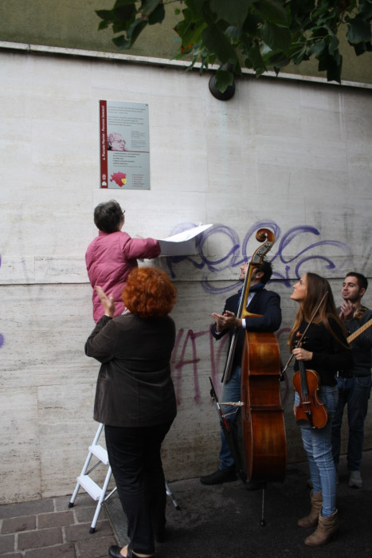
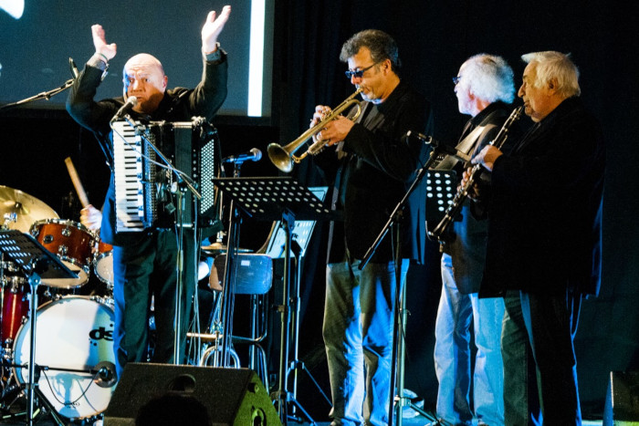

Il 4 ottobre 201 5 viene scoperta da Rossella Traversa, Presidente della Commissione Cultura della circoscrizione 4 del Comune di Milano, una targa commmemorativa del "percorso Jannacciano" che dovrà ripercorrere i luoghi caratteristici della Milano del Maestro. Nell'occasione gli allievi della scuola di Jazz di Enrico Intra, hanno suonato
in strada.
Il percorso dovrà essere completato nella zona 4 della città.
Per questo motivo in occasione della ricorrenza della morte del Maestro, si è voluto ricordare e rendergli ancora una volta omaggio, proprio nei quartieri di questa zona, via Forlanini in un teatro da poco restaurato: il Teatro Delfino

Carlo Pastori invita il pubblico ad accompagnare il ritmo